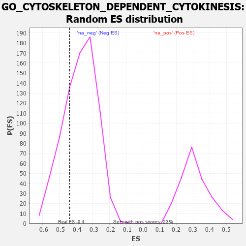

| | | Dataset | 7d |
| Phenotype | NoPhenotypeAvailable |
| Upregulated in class | na_neg |
| GeneSet | GO_CYTOSKELETON_DEPENDENT_CYTOKINESIS |
| Enrichment Score (ES) | -0.43975943 |
| Normalized Enrichment Score (NES) | -1.1654706 |
| Nominal p-value | 0.26459143 |
| FDR q-value | 0.67650115 |
| FWER p-Value | 1.0 |
Table: GSEA Results Summary
 Fig 1: Enrichment plot: GO_CYTOSKELETON_DEPENDENT_CYTOKINESIS
Fig 1: Enrichment plot: GO_CYTOSKELETON_DEPENDENT_CYTOKINESIS
Profile of the Running ES Score & Positions of GeneSet Members on the Rank Ordered List
| PROBE | GENE SYMBOL | GENE_TITLE | RANK IN GENE LIST | RANK METRIC SCORE | RUNNING ES | CORE ENRICHMENT | | 1 | KIF23 | | | 522 | 0.622 | -0.0172 | No |
| 2 | CHMP7 | | | 1435 | 0.403 | -0.1006 | No |
| 3 | SON | | | 1538 | 0.385 | -0.0834 | No |
| 4 | ESPL1 | | | 1734 | 0.349 | -0.0807 | No |
| 5 | NUP62 | | | 1871 | 0.324 | -0.0726 | No |
| 6 | VPS4A | | | 2654 | 0.205 | -0.1550 | No |
| 7 | DCTN3 | | | 2731 | 0.193 | -0.1495 | No |
| 8 | KIF4B | | | 2965 | 0.155 | -0.1667 | No |
| 9 | MITD1 | | | 3390 | 0.091 | -0.2130 | No |
| 10 | TTC19 | | | 3555 | 0.066 | -0.2285 | No |
| 11 | SPAST | | | 3801 | 0.027 | -0.2572 | No |
| 12 | PRC1 | | | 3841 | 0.021 | -0.2605 | No |
| 13 | CHMP6 | | | 3977 | -0.003 | -0.2772 | No |
| 14 | APC | | | 4558 | -0.107 | -0.3419 | No |
| 15 | CHMP3 | | | 4660 | -0.129 | -0.3445 | No |
| 16 | BIN3 | | | 4832 | -0.165 | -0.3532 | No |
| 17 | CHMP5 | | | 4952 | -0.188 | -0.3535 | No |
| 18 | IST1 | | | 5442 | -0.305 | -0.3912 | No |
| 19 | BBS4 | | | 5806 | -0.407 | -0.4051 | Yes |
| 20 | PLK1 | | | 6082 | -0.500 | -0.4007 | Yes |
| 21 | ROCK1 | | | 6152 | -0.520 | -0.3689 | Yes |
| 22 | ARF1 | | | 6583 | -0.701 | -0.3683 | Yes |
| 23 | SNX33 | | | 6930 | -0.888 | -0.3426 | Yes |
| 24 | ARL3 | | | 7041 | -0.963 | -0.2812 | Yes |
| 25 | MYH10 | | | 7048 | -0.966 | -0.2066 | Yes |
| 26 | EFHC1 | | | 7317 | -1.193 | -0.1473 | Yes |
| 27 | EFHC2 | | | 7326 | -1.199 | -0.0547 | Yes |
| 28 | ANK3 | | | 7690 | -1.740 | 0.0354 | Yes |
Table: GSEA details [plain text format]

Fig 2: GO_CYTOSKELETON_DEPENDENT_CYTOKINESIS: Random ES distribution
Gene set null distribution of ES for GO_CYTOSKELETON_DEPENDENT_CYTOKINESIS